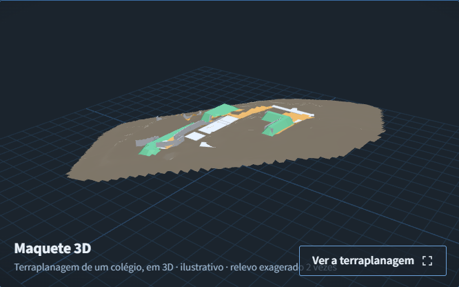

Explore os modelos. Entenda o trabalho.
As demonstrações ajudam a visualizar sistemas e compreender aspectos dos projetos. Cada uma identifica o empreendimento apresentado e distingue a geometria técnica dos recursos ilustrativos usados para facilitar a leitura.
Colégio Luiz Carlos — sistema de hidrantes
Explore tubulações, abrigos, bombas e reservatórios do sistema de hidrantes. A versão publicada reúne 171 componentes identificados, que podem ser selecionados para consulta.
A geometria proveniente do arquivo técnico IFC recebe complementos ilustrativos em alguns equipamentos. Essa distinção aparece na identificação das peças.
171 componentes identificados. Bombas, abrigos e outros equipamentos usam complementos ilustrativos, sinalizados por peça.
A demonstração apresenta o sistema de hidrantes, não o conjunto completo de projetos do colégio.
Conheça o projeto de prevenção contra incêndio.
Colégio Djalma Marinho — terraplanagem
A demonstração apresenta o terreno e as áreas de corte e aterro, com recursos visuais que ajudam a compreender as mudanças de nível. O acesso ao modelo está na página de terraplanagem.

Terraplanagem do Colégio Djalma Marinho — representação ilustrativa.
O terreno natural foi reconstruído para a demonstração. O relevo tem exagero vertical de duas vezes, e as contenções são ilustrativas. A maquete não substitui levantamento topográfico, não representa um projeto executivo completo e não deve ser usada para conferir quantitativos.
Explorar a demonstração de terraplanagem.
A demonstração abre na página do serviço de terraplanagem.
Outras formas de visualizar os projetos
Conheça também um anteprojeto estrutural em concreto, um modelo preliminar de mezanino metálico e as instalações hidrossanitárias de uma residência.
Esses exemplos apresentam outras aplicações das disciplinas. Não são identificados como modelos dos colégios deste portfólio.
Explorar as demonstrações de concreto e estrutura metálica.
Explorar as instalações de uma residência.
Para entender como as interfaces entre disciplinas são analisadas e as soluções são coordenadas:
Conheça a coordenação e a compatibilização BIM.